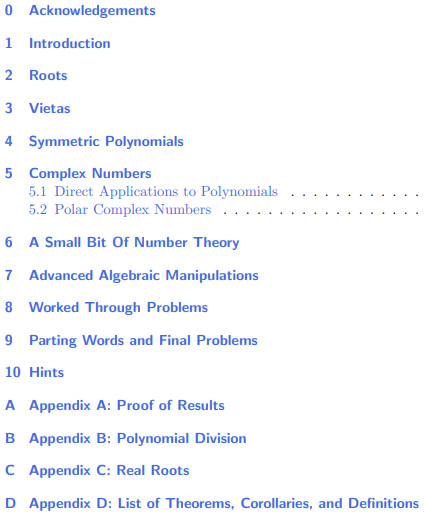

About Me
Look
here for information about me.
ASE
ASE Math Club students go
here.
Handouts!
A few of my handouts will be included here, and I hope to amass a large collection throughout the years. Most will in preparation for Mathcounts, MAA Contests (i.e. AMC 8, AMC 10, AIME, etc.), and other math contests (e.g. HMMT, ARML, PUMaC, etc.). Hope you enjoy!
You may have noticed that the handouts are divided into categories. Here is a brief summary:
- Level 1: For Mathleague and Beginner Mathcounts and AMC 8 (and for those who live in Texas, TMSCA)
- Level 2: For AMC 10/12 and AIME (you could consider this "Pre-Olympiad")
- Level 2: For USA(J)MO
Level 1 Handouts
The following are a few handouts I wrote for Online Classes that I taught during COVID-19 to benefit elementary and middle school students interested in math.
- Basic Algebra (
PDF Version
)
An introductory piece to Algebra (including ratios and proportions, SFFT, etc.).
- Basic Equation Solving (
PDF Version
)
An introduction to equation solving and algebraic manipulations (including Egyptian fractions, quadratics, etc.).
- Basic Analytic Geometry (
PDF Version
)
An introduction to coordinates and graphing.
- More Analytic Geometry (
PDF Version
)
An introduction to coordinate bashing and a few formulas in analytic goemetry.
- Basic Counting Techniques (
PDF Version
)
The basics of counting (including permutations, combinations. etc.).
- Basic Number Theory (
PDF Version
)
An introduction to number theory (including modular arithmetic, bases, etc.).
Level 2 Handouts
- Polynomials in the AIME (
PDF Version

Table of Contents
)
This was written in collaboration with naman12 (who did at least 99% of the work). A complete guide on how to use polynomials on the AIME. Includes (almost) every polynomial problem on the AIME and also problems from other sources (such as RMO and HMMT).
Level 3 Handouts
None here yet!
{kind=link}